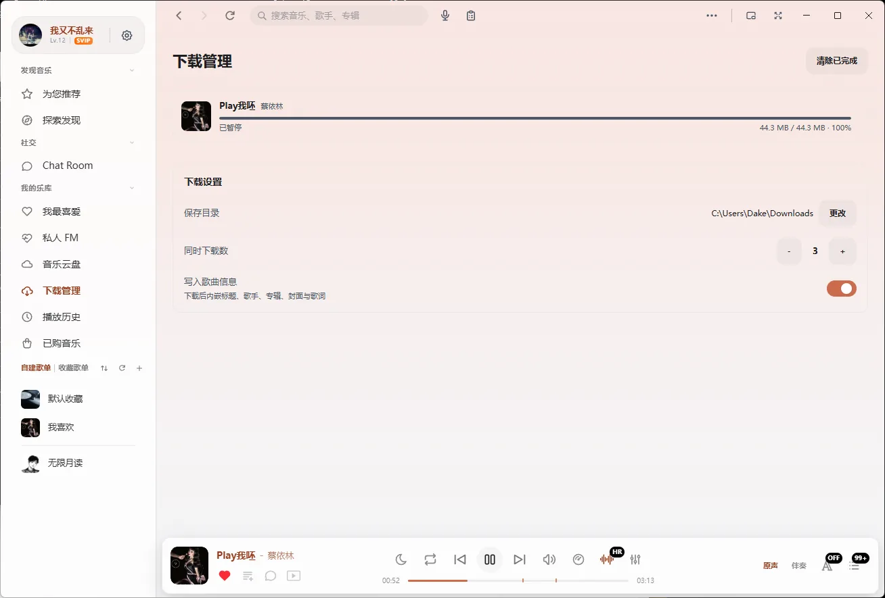

给 Windows 的
桌面音乐播放器
本地文件、在线曲库、逐字歌词、人声分离，全在一个窗口里。免费开源，装完就能用。

听歌这件事，值得一个认真做的桌面播放器。
01
歌词逐字对上
逐字歌词、桌面歌词、封面模式都在。切歌、拖动进度后，行号会重新对齐，不会一直停在上半句。

02
人声和伴奏分开
用本地模型把一首歌拆成人声与伴奏。第一次用需要下载模型，之后在本地算，不上传音频。

03
把歌存到本地
内置下载管理，标题、歌手、封面、歌词一起写进文件。断点续传、重名自动编号，目录由你指定。

04
和音乐一起聊
语聊房支持一起听歌、点歌、上麦和房间公告。七个麦位一行铺满，侧栏展开也不挤。

界面长这样
深浅色跟随系统，封面颜色会带到界面上




常见问题
- 收费吗？是不是真的开源？
- 完全免费，没有会员也没有广告。程序以 GPL-3.0 协议开源，任何人都可以自行编译和修改。
- 支持哪些系统？
- 目前正式发布的是 Windows 10 与 Windows 11 的 64 位版本。macOS 版本还没有发布安装包。
- 必须注册账号吗？
- 放本地歌不需要。在线曲库、云端歌单和语聊房需要登录，登录只用于这些联网功能。
- 会上传我的本地音乐吗？
- 不会。本地曲库只读取你添加的文件夹，播放记录和设置存在本机的数据库文件里。
- 人声分离要联网吗？
- 第一次使用需要联网下载模型文件，之后分离都在本机算，音频不会上传到服务器。
- 怎么更新到新版本？
- 应用内会自动检查更新，下载完成后弹出安装提示，也可以随时从下载页取最新安装包覆盖安装。
装一个，歌就在手边
免费开源，122 MB，Windows 10 与 11 的 64 位系统可以直接装。
下载 Windows 版如果安装时 Windows 提示「已保护你的电脑」，点「更多信息」再点「仍要运行」。